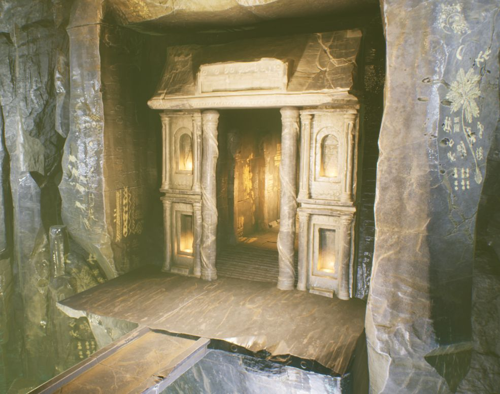

Fantasy Action
액션 RPG, 완성
보스와 몬스터가 함께 덤비는 던전을 돌파하는 액션 RPG입니다. 기획부터 클라이언트 구현까지 혼자 진행했고, GAS 전투와 적 AI, 애니메이션 구조에 집중했습니다.
- 내 역할
- 클라이언트 전체
- 팀
- 개인 프로젝트
- 기간
- 3개월, 완성
- 엔진
- Unreal Engine 5, C++ / Blueprint

YouTube에서 시연 영상 보기직접 해 보기
위에서 본 전투 장면입니다. 적 AI가 플레이어를 둘러쌀 자리를 찾을 때, 플레이어 주변 원 위에 12개 지점을 만들고 세 가지 테스트로 거릅니다. 원 반경은 쿼리마다 무작위입니다. 테스트를 하나씩 꺼 보고, 쿼리를 다시 실행해 보세요.
게임 흐름
AI 전투
- 보스와 몬스터가 서로 상호작용하며 함께 싸우는 군집형 전투
- 던전을 탐험해 모든 적을 섬멸하고 아이템을 얻는 보상
연출
- 시네마틱 툴로 카메라 무빙과 카메라 셰이크를 조합
- 치명타와 피니시 무브 같은 결정적인 장면에 잠깐 슬로우 모션 적용
- L_MainMenu게임 실행 후 Start와 Exit 선택
- L_GameMap1던전 탐험, 몬스터와 보스 전투
- 다음 포탈클리어하면 다음 맵으로 이동
- L_GameMap2마지막 전투 후 Clear
캐릭터 구조
AbilitySystemComponent
어빌리티, 스탯, 이펙트, 태그를 관리하는 중심입니다.
PawnCombatComponent
무기 장착, 몽타주 트레이스, 피격을 처리합니다.
PawnUIComponent
HP, Rage, Stamina 변화를 델리게이트로 HUD에 전달합니다.
MotionWarpingComponent
루트 모션 공격이 타겟을 향하도록 위치를 보정합니다.
무기마다 바뀌는 애니메이션 레이어
UAnimInstance에서UBaseAnimInstance,UCharacterAnimInstance,UPlayerAnimInstance로 이어지는 계층입니다.ABP_Player는UPlayerAnimInstance를 부모로 하고,ALI_Player인터페이스로 레이어를 연결합니다.- 무기별 레이어(
ABP_AxeLinkedAnimLayer등)는ABP_MasterLinkedAnimLayer를 상속해서, 무기를 장착하면 갈아 끼워집니다.
적 AI
AI Perception 시야(반경 1500cm)로 플레이어를 감지하고, Behavior Tree가 거리로 접근, 공격, 회피를 고릅니다. 공격할 때는 Service가 모션 워핑 타겟을 갱신하고, 위치는 위 데모의 EQS로 고릅니다.
AI Perception
Behavior Tree
Service
BTService_GetDistToTarget가 타겟과의 거리로 Blackboard 조건을 갱신하고, BTService_UpdateMotionWarpAttackTarget이 공격할 때 모션 워핑 타겟을 갱신합니다.
Task
BTTask_ActivateAbilityByTag로 GAS 어빌리티를 실행합니다. 거리가 350 미만이면 Enemy.Ability.Melee로 공격합니다.
EQS
- PathExist: 실제로 갈 수 있는 경로가 없으면 지점을 버립니다.
- Dot 2D: AI 전방 각도 안의 지점을 선호합니다 (최대 0.45, 약 63°).
- Distance: 타겟과 480 이상 떨어진 지점만 통과합니다.
보스 등장 컷신
CineCameraActor와 Transform 트랙으로 카메라를 움직이고, 보스가 포효하는 순간 카메라 셰이크를 넣었습니다. 블루프린트에서 레벨 시퀀스 플레이어를 만들어 재생합니다.
전투 HUD
플레이어 UI 컴포넌트는 HP, Rage, Stamina와 무기 장착 델리게이트에, 적 UI 컴포넌트는 HP 델리게이트에 연결해 값이 바뀔 때만 HUD를 갱신합니다.